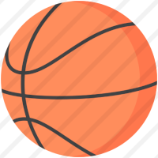

Basquete
Origem, NBA, franquias..
- Basquete
- O basquetebol ou bola ao cesto é um jogo desportivo coletivo, foi inventado em 1891 por um professor de educação física canadense, James Naismit, na Associação Cristã de Rapazes de Springfield, Massachussetts, Estados Unidos
- NBA
- A National Baskettball Association (NBA) é a principal liga de basquete da América do Norte. Possuindo 30 franquias, ela também é considerada a principal liga de basquete do mundo
- Franquias
- Como foi dito acima, a NBA possui diversas franquias, algumas delas são:
- Franquias NBA:
- Boston Celtics;
- Los Angeles Lakers;
- Chicago Bulls;
- Brooklyn Nets;
- UTAH Jazz;
- Philadelfia 76ers;
- Los Anfeles Clippers;
- New York Knicks;
- Milwaukee Bucks;
Bola de Basquete

- Bola de basquete
- A primieira bola de basquete foi criada em 1891, pela A.C. Spalding & Brothers, e tinha diâmetro pouco maior que uma bola de futebol.
Bolas usadas na NBA:
A bola utilizada na NBA é uma Spalding Fastbreak, uma das melhores do mercado, a Spalding é a fornecedora oficial da NBA, que é a principal liga de basquete profissional da América do Norte. Essa bola é de borracha, totalmente durável e com uma performance excelente.